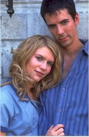
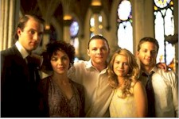

Contents | Features | Reviews | Books | Archives | Store |
 |
|
| Movie Credits | Buy It! |
Polish Wedding
Review by Elias Savada
Posted 31 July 1998
| Directed and written by Theresa Connelly. Starring
Lena Olin, Gabriel Byrne, Claire Danes, |
The community of Hamtramck, Michigan (previously featured in Blue Collar with Richard Pryor and Scarecrow with Al Pacino), plays center stage to a fine cast, including the remarkable Lena Olin and thoughtful Gabriel Byrne as Jadzia and Bolek Pzoniak, a sensuous wife and her sensitive husband who have drifted apart under the demands of their jobs as a local baker and cleaning woman, as well as her matriarchal position raising four sons and Hala, a promiscuous teenage daughter (Claire Danes) whose attraction to handsome local law officer Russell Schuster (Adam Trese) forces the family to arrange the titular occasion, better known in the Appalachians as a shotgun marriage.
The family is coping (just barely) under the strains of congestion, including the addition of Sofie (Mili Avital) a young Syrian sister-in-law forever exhausted by the sapping demands of her newborn child by way of Ziggy (Daniel LaPaine, one of the bevy of GQ talent in this year’s Dangerous Beauty and the hunky swimmer in 1994’s Muriel’s Wedding). It’s not a dysfunctional family. Quirky and ripe perhaps. Mom chomps on pickles by the bottle and the chain-smoking youngsters sneak in and out through a basement window under a neighbor’s lecherous stare. Jadzia’s extramarital activities with businessman Roman Kroll (the talented Rade Serbedzija, best known as the Russian crime boss Ivan Tretiak in last year’s The Saint but soon to be featured in a larger role in this year’s remake of Mighty Joe Young), stimulate a whimsical notion that she has broken free from her family’s chains, as she dresses up. Although you’ll probably remember how well Olin’s character "cleans" the men’s washroom floor, it is just foreplay for a poignantly revealing scene showing her powerful intensity in the tearful realization of her weakness of the flesh while also affirming her loyalty to Bolek and her family. This Swedish-born actress (winner of the Academy Award ten years ago for her American debut in The Unbearable Lightness of Being) oozes her character’s Polish gypsy origins with an authenticity that appears as hot as the ample polish sausages that overpopulates the family’s dining room table.
Dublin-born Byrne offers a moody performance as the restrained cuckold who finds solace in rising dough and raising children, particularly as a strong father to the tempestuous Hala. A much more thematically demanding role than his appearance in The Man in the Iron Mask, earlier this season. The 19-year-old Danes, here playing a believable curly-haired hellion, continues to grow her career after her breakthrough on the mid-decade ABC teenagesomething drama My So-Called Life. At one point, as the anxious girl waits for her awestruck lover outside the local church, she reminded me of an adolescent Marilyn Monroe (the trademark shot of her over the subway grate in The Seven Year Itch), her white skirt slightly flaring off the ground.
Maybe there’s a little heavy handed-ness when the not-so-virginal Hala is chosen as the chaste symbol of innocence in the Procession of the Virgin. and the uncharacteristic reaction by a priest after the unheralded announcement of the girl’s pregnancy disrupts the crowd. Or the hockey stick posse sent out in search of the nonplused father of Hala’s unborn child. But there’s a lot of magic working too in revealing the family’s passions and pains.
The locations add a silent but visual character as drawn by director Connelly, Hamtramck’s deeply religious Polish roots revealed by Canadian cinematographer Guy Dufaux (behind the camera on the award winning Jesus of Montreal and The Decline of the American Empire) and production designer Kara Lindstrom. Praise also to the spirited music by Luis Bacalov, a plucky score that sounds more Italian than Polish (musical cues courtesy of David Franco and the Orchestra di Roma), but add a sweet flavor nonetheless.
The film, shown earlier this year at the Sundance and Berlin Film Festivals, had a strong opening weekend on 11 screens in New York, Los Angeles, Toronto, and (of course) Detroit, with just a 23% drop-off in week two. Look for strong and steady numbers as this film expands amid the summer film avalanche. It’s a commendable – not great – word of mouth film that, like a good bottle of red wine, deserves some time to breath.
Contents | Features | Reviews | Books | Archives | Store
Copyright © 1999 by Nitrate Productions, Inc. All Rights Reserved.